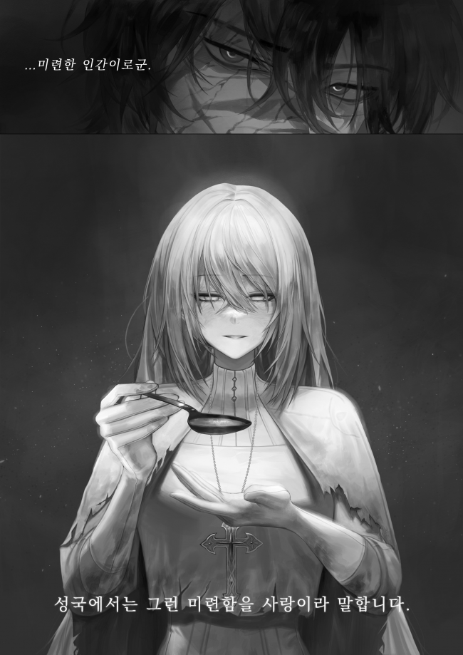

贫民窟 (2)
大约已经过去三天了。
因为贫民窟的独特性质他不能确定具体的时间。
当太阳升起时，附近的魔法塔挡住了阳光，当夜幕降临时，这里只有拾荒者的灯笼照亮。
贫民窟一直都是没有昼夜之分的阴暗之地。
当然，还有其他原因，他的身体状况很差。
持续的疼痛贯穿他的全身。意识也时常处于似醒非醒的状态。
维拉正处于随时死去都不奇怪的状态，所以他根本无法确定具体时间。
“咳咳…！”
一咳嗽，维拉就感到胸部发紧，呼吸困难。
“呼……！”
再次深呼吸，他检查了一下自己的身体状况，估计这样下去也不会太久了。
“……最多一周。”
他会死在这。
他咒骂着。他的伤势非常严重，需要立即接受治疗，但现在的状况不允许这么做。
相当可笑的状况。
“你还好吗？”
失去力量的盲圣女蕾妮也没有办法治愈他。
换句话说，他已经没有活路了。
“……我当然不好。”
“等一下。”
蕾妮的手触到他的胸口时，维拉的嘴里再次爆发出一声呻吟。
维拉压下呻吟，看向蕾妮，蕾妮身上散发着几乎耗尽的神性。
“别再白费力气了。圣女难道不知道已经没有希望吗？”
“你永远不会知道。”
语气很坚定。
维拉看着蕾妮，努力不让自己的意识再次消失。
“……奇怪的女人。
与她短暂相处后，维拉觉得她是一个很不寻常的人，足以配得上怪物的绰号。
她身上有烧伤的痕迹，让她原本的容貌扭曲得无法辨认，她双目失明，外出乞讨。
她得到的只是一碗比牲畜饲料还不如的粥，却像美味佳肴一样品尝着。
这是维拉无法理解的行为。
她为什么会这样？在贫民窟当乞丐的时候，维拉吃的最多的就是残渣和腐烂的食物，他不可能不知道其中的味道。
更有趣的是，尽管她品尝了，但并没有吃完。
喝了几勺粥后，她把剩下的倒进无法动弹的维拉的嘴里，她浪费了它来解决维拉的饥饿。
是的，这是浪费。
维拉想，没有必要这样浪费。
他很快就会死。伤势已经严重到不能再严重的地步，他不知道自己什么时候就会停止呼吸。
所以维拉一再告诉她让不用管他。
“你永远不会知道。”
这是她给他的唯一回应。
维拉注意到蕾妮把勺子推向他，将目光转向空中，低声念叨着什么。
“我不知道圣女是个白痴。”
“你是什么意思？”
“如果你是圣女，你不是比我更了解我的身体状况吗？不过……既然本该懂的人却做着如此愚蠢的事情，我岂不是很自然的会认为圣女是个白痴吗？”
他希望她能不管他，但又恼火她如此愚蠢地粘着他。
然而，蕾妮并不在意维拉的态度，再次将勺子推向维拉。
“你永远不会知道。难不成吃了这粥，我就能痊愈起来？”
“先吃吧。”
维拉盯着蕾妮，感觉自己的五脏六腑都在扭曲。
蕾妮用她那双没有聚焦的眼睛看着空中，挥舞着勺子到他的嘴应该在的位置。

“……你真是个傻瓜。”
“在圣国，这种愚蠢的行为叫爱。”
“圣女会喜欢看到快死的人吗？”
“我知道爱并不一定意味着欲望。”
维拉目光的尽头，蕾妮烧伤的痕迹皱成一团，她正在微笑。
“主说过要爱你的邻居。我怎么能抛弃她曾经最宠爱的仆人呢？”
“好吧，如果主是这样一位有爱心的人，他们一定会怜悯圣女，不会把你留在这种地方。”
维拉尽可能地大声笑了。当然，她看不到他脸上的表情，但他这样做只是因为想嘲笑她。
“这是我的选择。”
“圣女，在贫民窟里，他们称这样的人为白痴。”
”很高兴认识你。不过我不是圣女，我是蕾妮。“
她仍然微笑着回应。
***
大概已经过去两天或更长时间了。
蕾妮再次把勺子放到维拉的唇边。
“真麻烦。”
“你是个病人。”
“傻子…”
“是，我是。”
维拉的嘴闭上了。
“快点吃吧。”
维拉看着勺子在他面前晃来晃去。他轻轻吐了口气，抬起头，吃了起来。
“做得好。”
维拉受到称赞。然后他的目光转向蕾妮。
那是一张微笑的脸。维拉现在可以区分她的表情了。
维拉看着那笑容，想着。
‘真是个奇怪的女人。’ 他暗自嘀咕。
她没有义务和责任这么做，但看她却把他照顾得这么好，这样说她似乎很合适。
蕾妮看起来很丑陋，他甚至无法把她当作一个受到所有人赞扬的圣人。
一张丑陋、伤痕累累的脸，会让陌生人尖叫并逃跑。透过几乎睁不开的眼窝，可以看到蓝色的眼睛。白色的头发失去了光泽，沾满了污垢。
如果她一开始就以这种形式出去，肯定受尽各种侮辱，但她却没有表现出任何悲伤的迹象。
只有微笑。
这是她脸上唯一挂着的东西。
维拉根本不理解，所以他非常好奇，向蕾妮询问了一个问题。
“……你不后悔吗？”
“你是什么意思？”
“放弃你的力量。”
如果她没有放弃自己的力量，她就不必这样生活。就算大陆爆发战争，她也会很安全。
他怀着这样的想法看着蕾妮，蕾妮咯咯地笑着回答道。
“我一点也不后悔。”
“为什么？”
“你觉得我为什么会后悔？”
当她反问他时，维拉哑口无言。
他并不是没有什么可说的。相反，有太多的话要说，以至于无法用合适的语言表达出来。
贫民窟的生活是那么的悲惨、丑陋，根本不能称之为生活。
他们每天挨饿，贫民窟肮脏，冬天甚至没有墙可以防止寒风把他们冻死。
但是，你为什么不害怕呢？
为何不怀念美好的时光？
为什么你微笑着接受？
维拉想着这些想法时，他保持沉默。
“……你知道，曾经有一段时间我真的能看见。”
他听说过这件事。
蕾妮扬起温柔的笑容继续说道。
“在很小的时候。当时我五六岁，还是个婴儿肥还没有减掉的小孩。直到那时，我才能像其他人一 样，亲眼看到世界的光明。”
从她嘴里说出的，是她的过去。
“我是一个农民的女儿。我住的村庄是东部霍登王国一角的一个小村庄。”
这是维拉不知道的故事。因为当时他并没有兴趣去了解更多关于她的过去。
“有件事我现在还依稀记得。温暖的春日里五颜六色的花朵盛开，夏季阳光耀眼，丰收时节麦田染成一片金黄，冬季来临时世界一片纯白。
蕾妮闭上眼睛，似乎在回忆脑海中浮现的那些瞬间，她微笑着继续说。
“一切都很神奇。我也很开心。成为圣女后，我也很高兴能为别人而活，但是……自私地说，如果让我选择一生中最幸福的时刻，我会选择那个时刻。”
说话时她脸上带着微笑。即使维拉继续保持沉默，蕾妮也继续说话。
“所以，当有一天我突然失明时，我感觉我的世界正在崩溃。感觉就像我的闪闪发光的世界陷入了深渊。”
“我想圣女也是人。”
“我当然是人。”
这是一句讽刺的话，但她还是一如既往地温和地回答他。
“不管怎样，我想我哭了很多年。我以为世界上最不幸的人就是我，这个世界只对我残酷。”
维拉对这些话深表同情。
因为他以前有过这样的想法。
不仅仅是他。所有贫民窟里的人，在苦难的最深处的人，都抱有着这样的想法。
正当他思考的时候，蕾妮继续说道。
“那时，主的圣痕出现在了我身上。”
这是维拉熟知的故事。
他不可能不知道。当近四百年未出现的主神的圣痕出现在一个刚刚进入青春期的少女身上时，大陆发生了天翻地覆的变化。
对于维拉来说，这是非常熟悉的事实，因为那是他联合贫民窟所有卡特尔，开始与帝国贵族进行贸易的时期。
“一开始，我很怨恨他们。虽然这是对主的亵渎，但我认为主拿走了我的光，然后丢给了我圣痕作为补偿。这就是我责怪他们的原因。”
“如果圣国的祭司听到的话，一定会感到震惊。”
“这是埋藏在我内心深处的秘密。”
“你这么轻易就告诉我吗？我明白了，我马上就要死了，所以没关系。”
当正在认真听故事的维拉说出讽刺的话时，蕾妮笨手笨脚地把手按在维拉的胸口上，让疼痛堵住了他的嘴。
“啊……！”
“这是不好的。你必须更积极。”
维拉瞪了蕾妮一眼，但盯着一个盲人看毫无意义。
蕾妮轻笑了一会儿，继续说道。
“所以，当我过着充满怨恨的生活时，我去了贫民窟。”
“这是我第一次听说。”
“当然，这是一个秘密。曾经有一段时间，我秘密地出去冒险，在整个大陆上分享我的力量。”
蕾妮说着，舔了舔嘴唇，然后开口说道。
“那是一个充满绝望的地方，即使不用看也能感觉到。渐渐消失的呼吸声，痛苦的嚎叫，血腥和污秽的气味，皮肤上潮湿的空气。所有这一切都让我感到震惊。”
微微张开的眼窝，露出失去光芒的蓝色瞳孔。
“那时，我第一次来到贫民窟后，我感到羞愧。尽管我知道同情他们是不对的，但看到这里的人们让我意识到自己是多么丑陋和幼稚，我感到羞愧。 ”
蕾妮的嘴角再次浮现出微笑。
“那是我第一次想到一种不是怨恨的情绪。另外，我有了另一个想法。也许主从我身上夺走光的原因是因为她希望我与他们分享那光。”
“……这逻辑跳跃得有点大。”
“也许吧。然而，即使是这样又有什么关系呢？我得到这样的觉悟不是很重要吗？所以，我对现在住在这里一点也不后悔。虽然我已经变成了一个很弱小的存在，但我还是很高兴能够用这样的身体来帮助别人。”
维拉的目光转向蕾妮。
她微笑着。那是一种没有任何虚假的表情。
突然，维拉看着蕾妮，明白了为什么他看着她时胃里会翻腾起来。
‘…圣女。’
他明白了为什么她被这样称呼。
因为圣女是一个如此高尚的人，这让他胃里一阵翻腾。
他对她的高尚感到心烦意乱，这与他不同，他每时每刻都践踏他眼前的一切，生怕自己会回到贫民窟饿死。
维拉试图将目光从蕾妮身上移开，闭上了眼睛。
突然，悲伤的情感传遍了他的全身。
他一生中从未想过自己会感到后悔。这一刻，他因为那个丑陋的女人，心中浮现出悔恨。
显然，这个情况应该让她感到非常困难，以至于使她呕吐，而且由于她曾经过着比这更光鲜的生活，她应该更加绝望。
“……疯子。”
“很高兴听到你这么说。”
一声爽朗的笑声让维拉的胃再次翻腾起来。